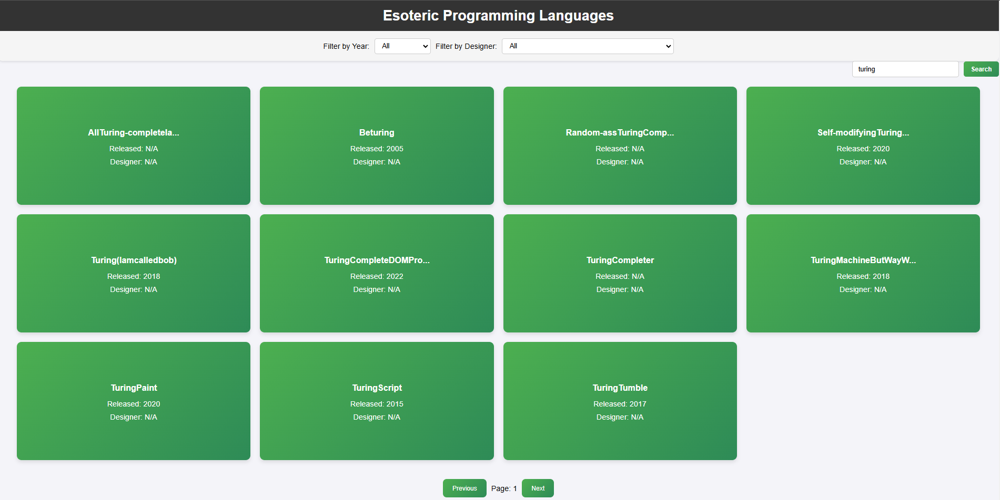
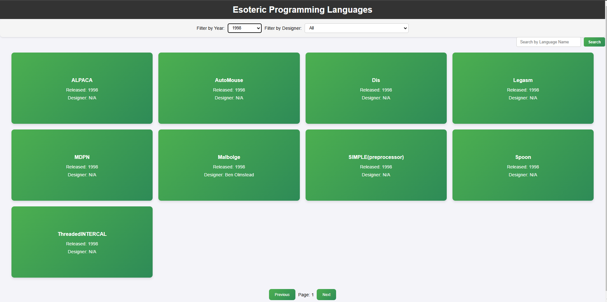
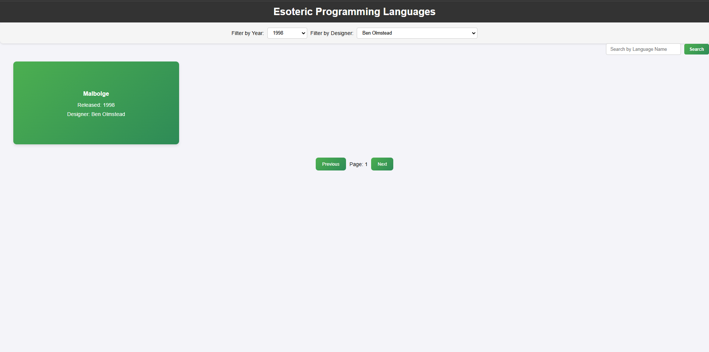
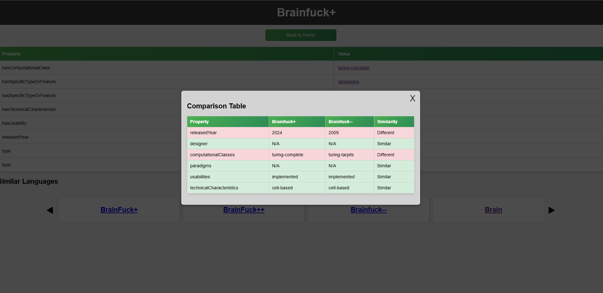

by Petrea Daniela and Puscasu Bogdan
Esoteric programming languages, often referred to as "esolangs," are programming languages created as a form of artistic expression, or as an intellectual challenge, rather than for practical software development. These languages usually prioritize novelty, complexity, or humor over ease of use, and they often explore unconventional computational paradigms. Esolangs, with their diverse range of designs, offer insights into the creativity and theoretical aspects of computation.
This project involves the development of a web application dedicated to providing detailed information on esoteric programming languages. The application allows users to explore various esolangs, search and filter them based on multiple attributes, and access detailed descriptions that encompass not only the language itself but also its computational model, paradigm, and other defining characteristics. The system utilizes a robust backend, an intuitive frontend, and a comprehensive RDF-based ontology that integrates information from various external knowledge sources, enabling users to gain deeper insights into this fascinating domain.
The primary goal of this system is to provide an accessible and dynamic platform for users to explore esoteric languages. The application offers several core features aimed at enhancing user engagement and providing a detailed understanding of the unique qualities of esolangs:
The architecture of the web application consists of several key components that work together to deliver an efficient, user-friendly experience:
The development of this system involved several key technical steps:
By the end of the project, the web application will serve as a comprehensive resource for exploring esoteric programming languages. The following outcomes are expected:
This report provides a detailed overview of the design and implementation of the system, structured as follows:
The internal data structures and models are essential to managing and representing data within the application. These structures are primarily based on an RDF ontology that captures complex relationships between different entities in the domain of esoteric programming languages.
The core data entities in this application are:
The RDF model uses triples (subject-predicate-object) to represent relationships between entities. For instance, a triple could express that "Language X is a functional paradigm language" or "Language Y is Turing-complete."
Example Triple: (Language X, hasParadigm, Functional)
SPARQL is used to query this RDF data model. A typical query might look for languages belonging to a particular computational class or paradigm.
SPARQL Query Example:
SELECT ?language
WHERE {
?language rdf:type dbo:ProgrammingLanguage .
?language dbo:paradigm ?paradigm .
?language dbo:year ?year .
}
The application uses a RESTful API, implemented using the Flask web framework, to provide data access and facilitate communication between the frontend and backend. The API supports various endpoints for interacting with esoteric language data, including searching for languages, retrieving language details, and filtering languages based on multiple attributes such as designer and year of release. The system follows standard REST principles, using appropriate HTTP methods and status codes.
The following list provides an overview of the available API endpoints:
{
"given_language": ""
}
Here are some example requests and responses:
Request: GET /languages/search?name=brainfuck&page=1&limit=10
Response:
{
"languages": [
{"id": 1, "name": "Brainfuck", "paradigm": "Imperative", "year": 1993, "designer": "Urban Müller"},
{"id": 2, "name": "Brainfuck Derivative", "paradigm": "Imperative", "year": 1993, "designer": "John Doe"}
]
}
Request: GET /languages/details?year=1993&designer=Urban%20Müller&page=1&limit=10
Response:
{
"languages": [
{"id": 1, "name": "Brainfuck", "paradigm": "Imperative", "year": 1993, "designer": "Urban Müller"},
{"id": 3, "name": "Befunge", "paradigm": "Imperative", "year": 1993, "designer": "Urban Müller"}
]
}
Request: POST /get_similar_languages
Request Body:
{
"given_language": "http://example.org/language/brainfuck"
}
Response:
{
"similar_languages": [
{"id": 2, "name": "Befunge", "similarity_score": 0.91},
{"id": 3, "name": "Piet", "similarity_score": 0.85}
]
}
The system is based on an RDF (Resource Description Framework)-based knowledge model that stores information related to esoteric programming languages, their paradigms, computational classes, and other associated features. This knowledge model enables efficient querying, reasoning, and navigation of data, leveraging the expressiveness of RDF and SPARQL for both discovery and analysis purposes.
The RDF model used in this system is designed to be highly expressive, allowing for the representation of complex relationships between various entities such as esoteric languages, their designers, paradigms, computational classes, and technical characteristics. By using a combination of RDF triples and ontologies, the system captures both the semantics and the context of these languages, allowing users to retrieve meaningful data through SPARQL queries.
The expressiveness of the RDF-based ontology is evident in the following areas:
The RDF-based knowledge model is not just a theoretical construct but plays a crucial role in enabling the practical functionality of the web application. Below are some real-world examples of how the RDF model is used in the application:
SELECT ?language ?name WHERE {
?language rdf:type ex:EsotericLanguage .
?language ex:hasDesigner "Urban Müller" .
?language ex:hasYear "1993" .
?language ex:hasName ?name
}
One of the key benefits of using an RDF-based ontology is the flexibility and reusability it offers. The model is designed to be extensible, allowing for easy incorporation of new data, features, and relationships without major changes to the underlying structure. As the domain of esoteric programming languages evolves, new languages and characteristics can be easily added to the ontology.
Moreover, the use of open standards such as RDF and SPARQL ensures that the model is interoperable with other systems and knowledge bases. The ontology can be reused in other contexts beyond the scope of this project, such as in academic research on programming languages or in computational theory studies.
The decision to use RDF as the foundational data model provides several advantages:
The application integrates external data sources, primarily DBpedia and Esolang, to enhance the knowledge base with authoritative data. This ensures completeness and correctness of the data used.
The ontology that the application querries was created by extracting information from these external sources and compiling it according to a structure defined using Protege. Protege enabled us to model various concepts and relationships based on the domain of esoteric programming languages. In Protege, we created several classes to represent different categories and concepts, including:
To populate the ontology with data, we developed a Python program to automatically retrieve information from Esolang and DBpedia. The program scraped information about various esoteric languages, including their names, descriptions, paradigms, computational classes, and related technical features. The data retrieved was then used to populate the RDF ontology, ensuring that the information was captured in the correct format and linked to the appropriate entities in the ontology.
SPARQL queries are used to retrieve data from the ontology. These queries are executed when getting different REST requests from the frontend, to return the necessary information.
The application adheres to the principles of Linked Data by using dereferenceable URIs for resources, employing RDF for data representation, and integrating with other linked datasets.
The user interface is simple and intuitive, allowing users to navigate through the list of esoteric languages, filter them by various criteria, and search for specific languages. The user visits the webpage, and the frontend sends a GET request to the backend to fetch all languages. The backend queries the ontology using SPARQL and returns a JSON response. The frontend dynamically renders the list of languages. If the user applies filters (by designer or year) or searches for a language, the frontend sends a request with parameters, then the backend processes the request, queries the ontology, and returns filtered results, and, finally, the frontend updates the displayed list accordingly.
The user enters a search term (e.g., "turing") into the search bar and views a list of languages containig it in their name.
The user selects a year from a dropdown to filter the list of languages by the creation date.
The user selects a designer from a dropdown to filter the list of languages by their designer.
After accessing a language information tab, the user can select another language to view a comparison between the two. Each property of the two languages is put in a table and checked if its matching between the two, or not.
The web application serves as a valuable tool for discovering and learning about esoteric programming languages. By leveraging a structured RDF-based knowledge model, SPARQL queries, and external knowledge bases such as DBpedia and Esolang Wiki, the system provides a semantically rich and flexible platform for exploring unconventional programming paradigms. The adoption of a RESTful API ensures smooth data retrieval and interaction between the frontend and backend, while the integration of Apache Jena Fuseki enables efficient RDF storage and querying.
One of the key strengths of the system is its extensibility, allowing for future improvements in several dimensions. Enhancements to the dataset can be made by incorporating additional knowledge bases and community contributions, ensuring broader coverage of esoteric languages and their properties. Furthermore, refining the user interface to improve accessibility and user experience can make the platform more engaging, especially for educators and programming enthusiasts.
To further optimize performance, future work should focus on caching mechanisms to reduce redundant queries and improve response times. Implementing database integration could allow for persistent storage of user interactions, analytics, and additional metadata, facilitating more personalized recommendations and improved search functionality. Authentication mechanisms could also be introduced if user-specific features, such as saving favorite languages or contributing new data, are planned for future releases.
Beyond these improvements, incorporating advanced natural language processing (NLP) techniques and machine learning models could enhance semantic similarity computations, making language recommendations more precise. Additionally, integrating interactive tutorials or code execution environments for selected esoteric languages could turn the application into a more hands-on educational tool.